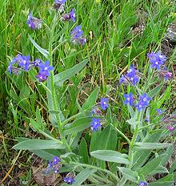

SAFARI
Users
Ahiflower
[Field Gromwell, Corn Gromwell, Bastard Alkanet; Lithospermum arvense alt Buglossoides arvensis]
This herbal plant is native to Eurasia, from Ireland to Japan, as far north as Korea and as far south as northern Pakistan. It has been introduced to much of North America and Australia. Until recently, this was a wild weed, but is now being increasingly cultivated. Its seed oil is currently of great interest in the nutritional supplement industry, due to it's Omega-3 oil content.
The Omega-3 oil in Ahiflower is high in SDA (stearidonic acid) which the
body can easily convert to the DHA (docosahexaenoic acid) and EPA
(eicosapentaenoic acid) typical of marine oils. DHA and EPA are the types of
Omega-3 that are important to human health. ALA (alphalinolenic acid), the
type of Omega-3 provided by flaxseed, canola oil, chia seeds, soybeans,
walnuts, and pine nuts is very difficult for the body to convert to SDA (about
8% conversion) which it can then convert to DHA and EPA. ALA is not of direct
benefit to human health.
Photo by Fornax distributed under license Creative
Commons
Attribution ShareAlike 3.0 Unported.
Alkanet
[Dyer's Bugloss, Orchanet, Spanish bugloss, Languedoc bugloss; Ratan Jot (India); Alkanna tinctoria]
This plant, native to the Mediterranean region, has blue flowers on
very hairy foliage, and a root that looks black from the outside but
is blue-red on the inside. It has long been used as a dye and as a
stain for wood, but also as a food coloring, particularly to color
wine, other alcoholic beverages and vegetable oils (the color is
soluble in alcohol and oils, but not water). In India, under the
name Ratan Jot, it has been traditionally used to color some versions
of Rogan Josh curry. Alkanet is currently approved as a food coloring
in Australia but banned in the European Union.
Photo by Jean Tosti distributed under license Creative
Commons
Attribution ShareAlike 3.0 Unported.
Anacua
[Knockaway, Sandpaper tree, Sugarberry; Anacua (Mexico); Ehretia anacua]
This tree, native to northeastern coastal Mexico and southeastern coastal
Texas, can grow to 45 feet on the floodplains, but remains shrub size
on arid hillsides. It produces clusters of tiny reddish yellow fruit,
usually between 0.25 and 0.32 inches (7 to 8 mm) diameter. The fruit
contains 2 stones, each containing 2 seeds, but the edible flesh is
sweet and juicy - also enjoyed by birds and various mammals.
Photo by Carlos Abrego distributed under license Creative
Commons
Attribution-ShareAlike 2.5 Generic.
Borage
[Starflower; Borago officinalis]
This herb is native to the Mediterranean region, but hardy enough to grow in the British Isles. It has become naturalized in many other regions, particularly by escaping from gardens. This herb has long been grown in home gardens for its fresh leaves, which have a cucumber-like aroma and flavor. It has also been grown as a medicinal, but the main purpose of commercial cultivation today is for borage seed oil, often sold as "Starflower Oil". This oil has the highest percentage of gamma-linoleic acid of any plant oil, and is sold into the ever profitably "health conscious" market as a supplement.
Used fresh, the leaves often appear in European salads. The bright
blue flowers are sweet and nontoxic, making them desirable as a color
garnish, particularly for deserts. In Germany, the leaves are often
used in soups, but in Frankfurt they are made into a green sauce called
Grüne Soße. In Liguria, Italy, borage is often used as a
filling for ravioli and pansoti. The leaves are used as a vegetable
in the Navarra and Aragóne regions of Spain, boiled and
sautéed with garlic. They are also popular on the island of
Crete. Borage has been long used as a medicinal, particularly for PMS
and menopause symptoms.
Photo by Dinkum contributed to the Public Domain.
Bugloss - Italian
 [Agoglossos (Crete); Anchusa azurea]
This herb is native to Europe, Western Asia and parts of North
Africa. Elsewhere it is known as a noxious weed. On the island of
Crete, tender stems are eaten steamed, boiled or fried.
Photo by Alberto Salguero Quiles distributed under
license Creative Commons
Attribution ShareAlike 3.0 Unported.
Comfrey - Tuberous
[Meacan dubh cnapach (Gaelic); Symphytum tuberosum]
This herb is native to Europe, including the British Isles, but
while common in Scotland it is not common in England and Wales. It
has been extensively planted in Ireland, and to some extent in the
West Coast region of North America. While the best known comfrey,
Symphytum officinale, is too toxic to use except medicinally,
Tuberous Comfrey is also used as an edible plant. In the spring, when
the leaves are tender, they are used as a potherb. They are not eaten
raw because they are hairy and toxic until cooked. The root tubers
are used mainly as a non-acidic substitute for coffee, roasted until
brown and brittle, then ground.
Photo by Asaspor distributed under license Creative
Commons
Attribution ShareAlike 3.0 Unported.
Heliotrope - European
[European Turnsole; Heliotropium europaeum]
There are over 250 species of Heliotrope, many of them native to Yemen.
They are noted for being highly medicinal and/or toxic. This one,
native to Europe, Asia and North Africa, is the only one that has had
significant culinary use. In Europe, sap from the flowers was used as
a food coloring in Medieval times, and in France into early modern
times. It is no longer so used due to toxicity and easy availability
of other colorings.
Photo by Michael Becker distributed under license Creative
Commons
Attribution-ShareAlike 3.0 Unported.
Koda
[Koda (Australia); Ehretia acuminata]
This tree, native to East Asia, Southeast Asia, New Guinea and
Australia, grows to nearly 100 feet high. It produces large clusters
of tiny yellow or red fruit, 0.16 to 0.20 inches (4 to 5 mm) diameter.
The fruit contains 2 to 4 large seeds, which doesn't leave much to
eat, but it is edible. It is also eaten by many birds. The tree is
used for building timber, furniture making and in traditional Chinese
medicine, but the fruit is now only occasionally eaten.
Photo by Mark Marathon distributed under license Creative
Commons
Attribution-ShareAlike 3.0 Unported.
Manjack
[Mareer; Snottygobbles, Glueberry, Narrow-leafed Bird Lime Tree; Kerosene wood (Papua New Guinea); Tou, Kou (Hawaii); Cordia subcordata]
This tree is native to Africa, South Asia, Southeast Asia including Philippines, and the Pacific Islands, including Hawaii. It produces small clusters of oblong fruit, 3/4 to 1-1/8 inches long, containing one to four seeds. Ripe, the fruit is woody and unappetizing, designed to float long distances across the sea. The seeds are edible but used mainly as famine food.
The main culinary use for this tree has been in ancient Hawaii.
Because the wood did not taint or flavor food is was used for bowls,
utensils and large containers of 2 to 4 gallon size for fermenting
and storing Poi (a paste made from cooked taro roots - the main staple
of traditional Hawaiian cuisine).
Photo by Tau'olunga distributed under license Creative
Commons
Attribution-ShareAlike 3.0 Unported.
Manjack - Fragrant
[Snotty gobbles, Glue berry, Pink pearl, Bird lime tree, Indian cherry, Preserved Taiwan Seeds (market); Bocote (Spanish); Dela, Gunda, Lasora (Hindi); Bhokar (Marathi); Lasura (Nepal); Cummingcordia, Pobuzih, Phoa-po-chi (Taiwan); Anonang (Philippine); Thanapet (Burma); Cordia dichotoma | also Lasura, Assyrian Plum, Pidar, Panugeri, Naruvilli, Geduri, Spistan, Burgund dulu wanan; Cordia myxa]
Fragrant Manjack is native to Pakistan, Nepal, northern India, Sri
Lanka, Southeast Asia including Philippines, China, Ryuku Islands,
Taiwan, New Guinea, northern Australia and New Caledonia. It produces
small clusters of pink fruit, 1/2 to 3/4 inch diameter, containing a
single large seed. Ripe, the fruit is mucilaginous (used for glue in
offices), a bit insipid in flavor, very delicate and very perishable.
It is usually sold unripe or pickled. C mixa is very similar to
C dichotoma and used the same, but the fruit tends to be more
tan than pink.
Details and Cooking.
Photo by Dinesh Valke distributed under license Creative
Commons
Attribution-ShareAlike 3.0 Unported.
Peach Bush
 [Native Willow, Peachwood; Ehretia saligna]
[Native Willow, Peachwood; Ehretia saligna]
This shrub or small tree, growing to about 20 feet high, is native to
northern Australia. It produces tiny yellow or red fruit, similar to
that of Koda (see below) but in smaller clusters. The fruits are 0.16 to
0.20 inches (4 to 5 mm) diameter, and contain 2 to 4 large seeds. This
doesn't leave much to eat, but the fruit was an important food for
Australian aborigines, particularly in arid regions. It is not much
eaten today due to difficulty in harvesting.
Photo by Mark Marathon distributed under license Creative
Commons
Attribution-ShareAlike 3.0 Unported.
Waterleaf - Ball Headed
[Hydrophyllum capitatum]
This herbal plant is native to western North America, from British
Columbia and Alberta in Canada down to central California, Utah and
Colorado in the United States. It was an important food source for
American Indians and early settlers. Tender shoots and leaves were
cooked as greens and the fleshy roots were also cooked.
Photo by Matt Lavin distributed under license
Creative Commons
Attribution ShareAlike 2.0 Generic.
Waterleaf - Virginia
[Eastern Waterleaf, Shawnee Salad; Hydrophyllum virginianum | also Large-leaved Waterleaf; H. macrophyllum | also Appendaged Waterleaf; H. appendiculatum | also Broad-leaved Waterleaf; H. canadense]
These plants are native to North America from Minnesota in the Great Lakes region east to western New England and south to eastern Kansas and Virginia. They are perennial herbs that live in moist forested areas. Tender young leaves and shoots are eaten as salad greens and older leaves are cooked like spinach. The flavor is mild, but gets bitter if the leaves are too old. Young leaves may have whitish spots that look like water spots, thus the name "waterleaf".
The photo is of H. virginianum, which is very unpopular in
gardens. It spreads quickly by long root runners and soon takes over
everything, and is difficult to impossible to eradicate once established.
Photo by U.S. Environmental Protection Agency = Public
Domain.
Yerba Santa
[California Yerba Santa, Mountain balm, Consumptive's weed, Bear weed; Eriodictyon californicum]
This shrub is native to dry mountain slopes of Oregon and California, though there are only scattered populations in Southern California. It can grow to about 10 feet high, and has narrow leaves up to 6 inches long. The Spanish name translates to "Sacred Herb", for its medicinal properties, especially applied to a wide range of respiratory problems. It has recently come to the attention of the food and pharmaceutical industries due to four flavanones it produces. These may be useful for masking bitter tastes.
This plant encourages the spread of wild fires, having coated
itself with highly flammable resins. It does this on purpose, because
it quickly grows back from rhizomes deep in the ground, after
competing plants have been burned off.
Photo by Breck22 contributed to the Public Domain.